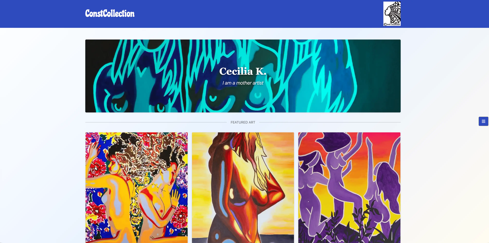

Constcollection
A Django-built, responsive portfolio site for Swedish artist Cecilia Kristoffersson, created during a student hackathon.
- Role: Team Hackathon Project — Django Backend (Art Categorisation System)
- Year: 2026
- Technologies:

Project Links
Project Overview
Constcollection is a minimalist, accessible website built to showcase the work of Swedish artist Cecilia Kristoffersson. The site's main goal was to keep visitors' attention on the artwork itself, while giving the artist a way to manage her own gallery content — without ever needing to touch the Django admin panel directly.
- A front-end curator mode letting the artist add, edit, or organise her own artwork
- Separate sections for the gallery, biography, and past exhibitions
- A colour palette drawn directly from one of the artist's own paintings
- Deployed on Heroku with a PostgreSQL database and Cloudinary for image hosting
The Problem
- The artist needed a professional online presence to showcase her collections
- Managing content shouldn't require technical knowledge of a Django admin panel
- The design needed to stay out of the way and let the artwork be the focus
- The site needed to meet strong accessibility and colour-contrast standards
The Solution
- Built a "curator mode" so the artist can add, edit, and organise media from the site itself
- Modelled Media, Category, and About Section content separately in Django for flexibility
- A minimalist navigation bar, tucked away in a toggle so it doesn't distract from the art
- Colour and typography chosen to reflect the artist's own visual style
- All pages tested against WCAG AAA colour contrast standards
Key Features
- Curator Admin Panel: Add, edit, or delete artwork, categories, and exhibitions from the front end.
- Gallery: Displays all art pieces, filterable by category.
- About & Exhibitions Pages: Biography and exhibition history, separate from the gallery itself.
- Toggle Navigation: Keeps the interface minimal so the artwork stays the focus.
- WCAG AAA Contrast: All colour combinations tested for the strictest accessibility standard.
Outcome
The team delivered a working, deployed art portfolio site within the hackathon timeframe, with nearly every page passing HTML validation cleanly and all colour choices meeting WCAG AAA contrast requirements. A few known bugs remain around delete-confirmation modals in curator mode (documented in the project's README), with full delete functionality still available through the Django admin panel as a working alternative.
My contribution focused on the backend categorisation system — building the Django logic that lets the artist organise her media into categories (the different types of art she creates), with each category linking to many pieces of media. It's a feature that works entirely behind the scenes: visitors never see the category system directly, but it's what powers how art is grouped and filtered throughout the site.